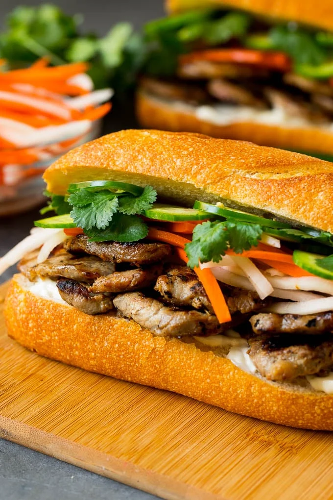

Banh Mi Sandwich

What is a banh-mi sandich?
In Vietnamese cuisine, bánh mì or banh mi is a short baguette with thin, crisp crust and a soft, airy texture. It is often split lengthwise and filled with meat and savory ingredients like a submarine sandwich and served as a meal, called bánh mì thịt.
Ingredients
- 2 cloves garlic
- 1 carrot
- 1 small cucumber
- 1/2 cup of cilantro
- 2 green chili peppers
- 1/4 cup sugar
- 1/8 cup rice wine vinegar
- 1 tablespoon salt
- 1 cup hot water
- 12 oz boneless, skinless chicken thighs
- 1 1/2 tablespoons sesame oil
- 1 tablespoon honey
- 1 tablespoon hoisin sauce
- 1 (13-in) baguette
- 3 tablespoons mayonnaise
- 1 teaspoon Maggi seasoning
Steps
- Mince the garlic.
- Peel the carrot and chop it into matchstick pieces.
- Peel and slice the cucumber into ribbons.
- Pick the cilantro leaves off the stems.
- Slice the green chilies.
- Mix the sugar, rie wine vinegar, and salt with the hot water until the sugar and salt have dissolved.
- Pour the mixture over the carrots and let sit to pickle for 1 hour.
- Chop the chicken thigh meat into bite sized pieces and place them in a large bowl.
- Mix the minced garlic, sesame oil, honey, hoisin sauce, and soy sauce, and pour it over the chicken.
- Refrigerate the chicken for 15 minutes.
- Heat a frying pan over medium-high and saute the marinated chicken until cooked through, about 10 minutes.
- Drain the pickled carrots.
- Slice open the baguette and scoop out some of the soft bread inside to create more room for teh sandwich fillings.
- Spread the mayonnaise onto both sides of the baguette, then sprinkle it with Maggi seasoning.
- Place the cooked chicken inside the bread followed by carrots, cucumber, cilantro, and chili peppers.
- Slice the banh mi in half to make two servings and enjoy!